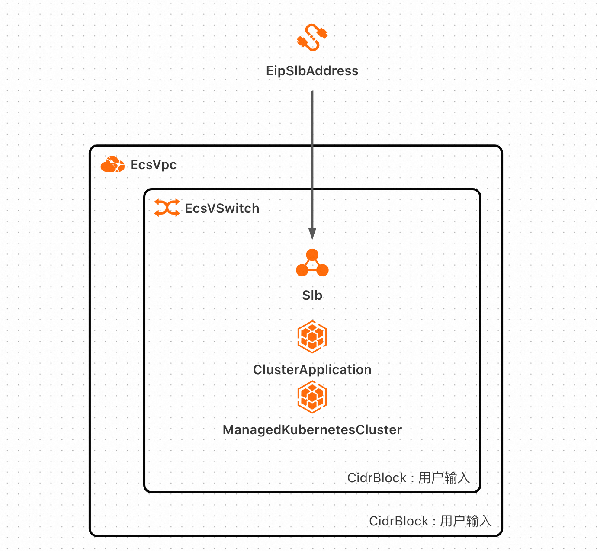
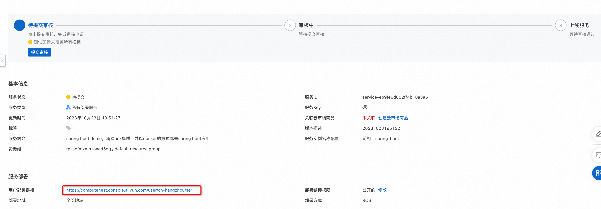
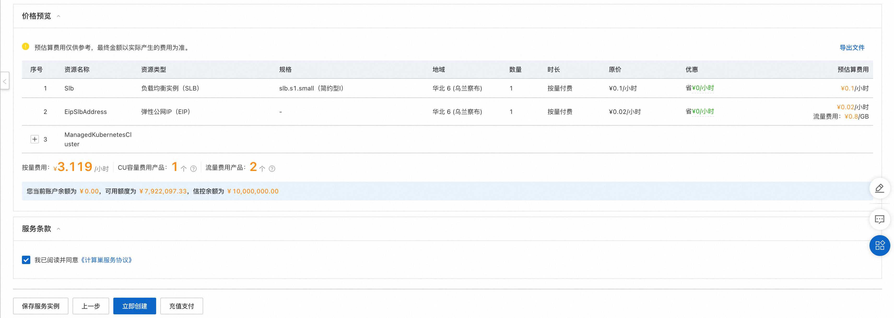
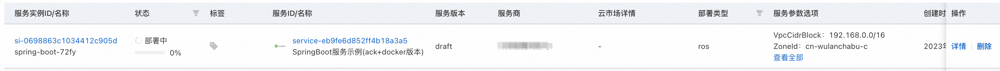
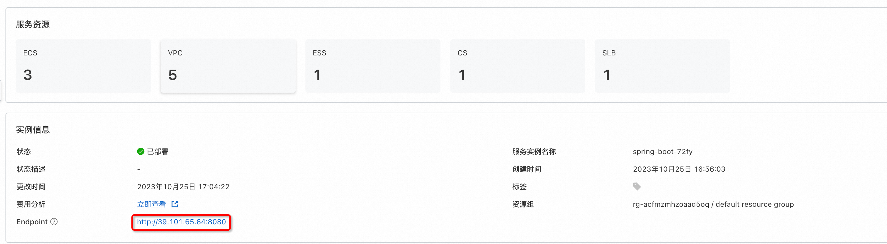
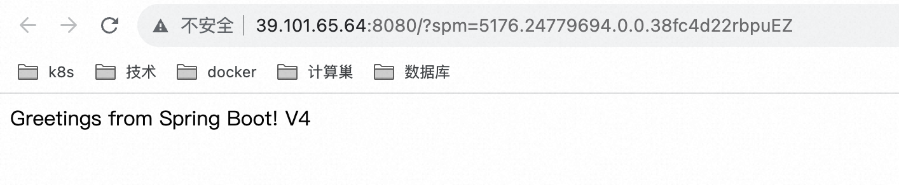

服务模版说明文档
服务说明
本文介绍springboot服务ack+docker版快速上手流程，本示例对应的git地址
本示例会自动的构建计算巢服务，具体的服务构建流程为:
- 构建并上传docker镜像，创建计算巢容器镜像部署物
- 创建计算巢服务并关联容器镜像部署物
创建过程大约持续1分钟，当服务变成待提交后构建成功
服务架构
本部署架构为ack集群部署，将docker镜像以service的方式部署到ack集群中，通过service绑定的loadBalancer的公网ip进行访问，在本例中，service提供的对外端口为8080，和容器对外提供的端口相同。

服务构建计费说明
测试本服务构建无需任何费用，创建服务实例涉及的费用参考服务实例计费说明
RAM账号所需权限
本服务需要对ACK、ECS、VPC等资源进行访问和创建操作，若您使用RAM用户创建服务实例，需要在创建服务实例前，对使用的RAM用户的账号添加相应资源的权限。添加RAM权限的详细操作，请参见为RAM用户授权。所需权限如下表所示。
| 权限策略名称 | 备注 |
|---|---|
| AliyunCSFullAccess | 管理容器服务(CS)的权限 |
| AliyunECSFullAccess | 管理云服务器服务（ECS）的权限 |
| AliyunVPCFullAccess | 管理专有网络（VPC）的权限 |
| AliyunROSFullAccess | 管理资源编排服务（ROS）的权限 |
| AliyunComputeNestUserFullAccess | 管理计算巢服务（ComputeNest）的用户侧权限 |
| AliyunComputeNestSupplierFullAccess | 管理计算巢服务（ComputeNest）的服务商侧权限 |
服务实例计费说明
测试本服务在计算巢上的费用主要涉及：
- ack集群费用
- 所选vCPU与内存规格
- 系统盘类型及容量
- 公网带宽
计费方式包括：
- 按量付费（小时）
- 包年包月
目前提供如下实例：
| 规格族 | vCPU与内存 | 系统盘 | 公网带宽 |
|---|---|---|---|
| ecs.c6.large | 内存型c6，2vCPU 4GiB | ESSD云盘 200GiB PL0 | 固定带宽1Mbps |
| ecs.c6.2large | 内存型c6，4vCPU 8GiB | ESSD云盘 200GiB PL0 | 固定带宽1Mbps |
预估费用在创建实例时可实时看到。
服务实例部署流程
部署参数说明
| 参数组 | 参数项 | 说明 |
|---|---|---|
| 服务实例 | 服务实例名称 | 长度不超过64个字符，必须以英文字母开头，可包含数字、英文字母、短划线（-）和下划线（_） |
| 地域 | 服务实例部署的地域 | |
| 付费类型配置 | 付费类型 | 资源的计费类型：按量付费和包年包月 |
| 基础配置 | 可用区 | ACK集群所在可用区 |
| 专有网络IPv4网段 | VPC的ip地址段范围，创建VPC时使用 | |
| 交换机子网网段 | VSwitch的ip地址段范围，必须是VPC网段的子网段 | |
| 实例密码 | 长度8-30，必须包含三项（大写字母、小写字母、数字、 ()`~!@#$%^&*-+=|{}[]:;'<>,.?/ 中的特殊符号） | |
| Kubernetes配置 | Worker节点规格 | ACK集群中节点使用的实例规格 |
| Worker 系统盘磁盘类型 | ACK集群中节点使用的系统盘磁盘类型 | |
| Worker节点系统盘大小(GB) | ACK集群中节点使用的系统盘磁盘大小 | |
| Service CIDR | ACK集群中service可用网段，不能与 VPC 及 VPC 内已有 Kubernetes 集群使用的网段重复 | |
| Pod 网络 CIDR | ACK集群中pod可用网段，不能与 VPC 及 VPC 内已有 Kubernetes 集群使用的网段重复 | |
| 负载均衡配置 | 规格 | 负载均衡规格 |
部署步骤
- 部署链接 
- 单击部署链接，进入服务实例部署界面，根据界面提示，填写参数完成部署。

- 参数填写完成后可以看到对应询价明细，确认参数后点击下一步：确认订单。 
- 确认订单完成后同意服务协议并点击立即创建 进入部署阶段。 
- 等待部署完成后就可以开始使用服务，进入服务实例详情点击visitUrl。 
- 部署结果 
服务详细说明
本文通过将代码构建后，将deploy.sh和application.jar打包成package.tgz,对其中的application.jar打包成docker镜像, 通过计算巢部署物上传为容器镜像部署物，在模版中创建ACK集群，将容器镜像部署物部署到ACK集群上。
package.tgz打包为docker镜像对应的Dockerfile如下：
FROM centos
# 更新yum源地址
RUN cd /etc/yum.repos.d/ && \
sed -i 's/mirrorlist/#mirrorlist/g' /etc/yum.repos.d/CentOS-* && \
sed -i 's|#baseurl=http://mirror.centos.org|baseurl=http://vault.centos.org|g' /etc/yum.repos.d/CentOS-* && \
yum makecache
RUN yum update -y && \
yum install -y java-1.8.0-openjdk java-1.8.0-openjdk-devel && \
yum install -y git && \
yum clean all && \
cd /root && \
git clone https://github.com/aliyun-computenest/springboot-ack-docker-demo.git && \
mkdir -p /home/admin/application && \
cp /root/springboot-ack-docker-demo/artifacts/package.tgz /home/admin/application && \
cd /home/admin/application && \
tar xvf package.tgz && \
rm -rf /root/springboot-ack-docker-demo && \
rm package.tgz
WORKDIR /home/admin/application/target
ENV JAVA_HOME /usr/lib/jvm/java-1.8.0-openjdk/
RUN export JAVA_HOME
EXPOSE 8080
CMD ["java", "-jar", "application.jar"]
templates/template.yaml主要由三部分组成
1.Parameters定义需要用户填写的参数，包括付费类型，ACK实例规格和实例密码可用区等参数
Parameters:
PayType:
Type: String
Label:
en: ECS Instance Charge Type
zh-cn: 付费类型
Default: PostPaid
AllowedValues:
- PostPaid
- PrePaid
AssociationProperty: ChargeType
AssociationPropertyMetadata:
LocaleKey: InstanceChargeType
PayPeriodUnit:
Type: String
Label:
en: Pay Period Unit
zh-cn: 购买资源时长周期
Default: Month
AllowedValues:
- Month
- Year
AssociationProperty: PayPeriodUnit
AssociationPropertyMetadata:
Visible:
Condition:
'Fn::Not':
'Fn::Equals':
- '${PayType}'
- PostPaid
PayPeriod:
Type: Number
Description:
en: >-
When the resource purchase duration is Month, the value of Period ranges
from 1 to 9, 12, 24, 36, 48, or 60. <br><b><font color='red'> When ECS
instance types are PrePaid valid </b></font>
zh-cn: >-
当购买资源时长为Month时，Period取值：1~9 <br><b><font
color='red'>当ECS实例类型为PrePaid有效</b></font>
Label:
en: Period
zh-cn: 购买资源时长
Default: 1
AllowedValues:
- 1
- 2
- 3
- 4
- 5
- 6
- 7
- 8
- 9
AssociationProperty: PayPeriod
AssociationPropertyMetadata:
Visible:
Condition:
'Fn::Not':
'Fn::Equals':
- '${PayType}'
- PostPaid
ZoneId:
Type: String
AssociationProperty: 'ALIYUN::ECS::Instance:ZoneId'
Label:
en: Zone ID
zh-cn: 可用区
Default: cn-hangzhou-h
VpcCidrBlock:
Type: String
Label:
en: VPC CIDR IPv4 Block
zh-cn: 专有网络IPv4网段
Description:
zh-cn: >-
VPC的ip地址段范围，<br>您可以使用以下的ip地址段或其子网:<br><font
color='green'>[10.0.0.0/8]</font><br><font
color='green'>[172.16.0.0/12]</font><br><font
color='green'>[192.168.0.0/16]</font>
en: >-
The ip address range of the VPC in the CidrBlock form; <br>You can use
the following ip address ranges and their subnets: <br><font
color='green'>[10.0.0.0/8]</font><br><font
color='green'>[172.16.0.0/12]</font><br><font
color='green'>[192.168.0.0/16]</font>
Default: 192.168.0.0/16
AssociationProperty: 'ALIYUN::VPC::VPC::CidrBlock'
VSwitchCidrBlock:
Type: String
Label:
en: VSwitch CIDR Block
zh-cn: 交换机子网网段
Description:
zh-cn: 必须属于VPC的子网段。
en: Must belong to the subnet segment of VPC.
Default: 192.168.1.0/24
AssociationProperty: 'ALIYUN::VPC::VSwitch::CidrBlock'
AssociationPropertyMetadata:
VpcCidrBlock: VpcCidrBlock
LoginPassword:
NoEcho: true
Type: String
Description:
en: >-
Server login password, Length 8-30, must contain three(Capital letters,
lowercase letters, numbers, ()`~!@#$%^&*_-+=|{}[]:;<>,.?/ Special symbol
in)
zh-cn: >-
服务器登录密码,长度8-30，必须包含三项（大写字母、小写字母、数字、 ()`~!@#$%^&*_-+=|{}[]:;<>,.?/
中的特殊符号）
Label:
en: Instance Password
zh-cn: 实例密码
ConstraintDescription:
en: >-
Length 8-30, must contain three(Capital letters, lowercase letters,
numbers, ()`~!@#$%^&*_-+=|{}[]:;<>,.?/ Special symbol in)
zh-cn: '长度8-30，必须包含三项（大写字母、小写字母、数字、 ()`~!@#$%^&*_-+=|{}[]:;<>,.?/ 中的特殊符号）'
AssociationProperty: 'ALIYUN::ECS::Instance::Password'
AllowedPattern: '^[a-zA-Z0-9-\(\)\`\~\!\@\#\$\%\^\&\*\_\-\+\=\|\{\}\[\]\:\;\<\>\,\.\?\/]*$'
MinLength: 8
MaxLength: 30
Default: computenest*12345
WorkerInstanceType:
Type: String
Label:
en: Worker Nodes Types
zh-cn: Worker节点规格
AssociationProperty: 'ALIYUN::ECS::Instance::InstanceType'
AssociationPropertyMetadata:
ZoneId: '${ZoneId}'
Default: ecs.g6.large
WorkerSystemDiskCategory:
Type: String
AllowedValues:
- cloud_efficiency
- cloud_ssd
- cloud_essd
AssociationPropertyMetadata:
LocaleKey: DiskCategory
InstanceType: '${WorkerInstanceType}'
Label:
en: Worker System Disk Category
zh-cn: Worker 系统盘磁盘类型
Default: cloud_essd
WorkerSystemDiskSize:
Type: Number
Label:
en: Worker System Disk Size(GB)
zh-cn: Worker节点系统盘大小(GB)
MinValue: 1
Default: 120
PodCidr:
Type: String
Description:
zh-cn: >-
请填写有效的私有网段，即以下网段及其子网：10.0.0.0/8，172.16-31.0.0/12-16，192.168.0.0/16<br>不能与
VPC 及 VPC 内已有 Kubernetes 集群使用的网段重复。<font
color='blue'><b>创建成功后不能修改</b></font>
en: >-
Please fill in a valid private segment, i.e. the following segments and
their subnets: 10.0.0.0/8, 172.16-31.0.0/12-16, 192.168.0.0/16<br> which
cannot duplicate the network segments already used by clusters in VPC
and VPC Kunetberes. <font color='blue'><b>Cannot be modified after
successful creation</b></font>
Label:
zh-cn: Pod 网络 CIDR
en: Pod Network CIDR
AssociationProperty: 'ALIYUN::CS::ManagedKubernetesCluster::PodCidr'
Default: 10.0.0.0/16
ServiceCidr:
Type: String
Description:
zh-cn: >-
可选范围：10.0.0.0/16-24，172.16-31.0.0/16-24，192.168.0.0/16-24<br>不能与 VPC 及
VPC 内已有 Kubernetes 集群使用的网段重复。<font color='blue'><b>创建成功后不能修改</b></font>
en: >-
Optional range: 10.0.0.0/16-24, 172.16-31.0.0/16-24,
192.168.0.0/16-24<br> cannot duplicate segments already used by existing
Kubernetes clusters in VPC and VPC.<font color='blue'><b>Cannot be
modified after successful creation</b></font>
Label:
zh-cn: Service CIDR
en: Service CIDR
AssociationProperty: 'ALIYUN::CS::ManagedKubernetesCluster::ServiceCidr'
Default: 172.16.0.0/16
LoadBalancerSpec:
Type: String
AssociationProperty: ALIYUN::SLB::Instance::InstanceType
Label:
en: Specifications
zh-cn: 规格
Default: slb.s1.small
2.Resources定义需要开的资源，包括新开的vpc、loadBalancer、ack集群。ALIYUN::CS::ClusterApplication资源类型会将镜像按yaml文件部署到ACK集群中，其中{{ computenest::acr::dockerconfigjson }}是下载docker所需secret的占位符，计算巢服务会在部署时替换为对应的下载秘钥。{{ computenest::acrimage::demo }} 是容器镜像仓库的占位符，计算巢服务会替换成对应的镜像仓库地址。
Resources:
EcsVpc:
Type: 'ALIYUN::ECS::VPC'
Properties:
VpcName:
Ref: 'ALIYUN::StackName'
CidrBlock:
Ref: VpcCidrBlock
EcsVSwitch:
Type: 'ALIYUN::ECS::VSwitch'
Properties:
VSwitchName:
Ref: 'ALIYUN::StackName'
VpcId:
Ref: EcsVpc
ZoneId:
Ref: ZoneId
CidrBlock:
Ref: VSwitchCidrBlock
# 新建负载均衡
Slb:
Type: ALIYUN::SLB::LoadBalancer
Properties:
LoadBalancerName:
Ref: ALIYUN::StackName
PayType:
Ref: PayType
PricingCycle:
Ref: PayPeriodUnit
Duration:
Ref: PayPeriod
VpcId:
Ref: EcsVpc
VSwitchId:
Ref: EcsVSwitch
LoadBalancerSpec:
Ref: LoadBalancerSpec
AddressType: intranet
# 新建eip
EipSlbAddress:
Type: ALIYUN::VPC::EIP
Properties:
Name:
Ref: ALIYUN::StackName
InternetChargeType: PayByTraffic
Bandwidth: 100
# 绑定eip到负载均衡
EipSlbAddressAssociation:
Type: ALIYUN::VPC::EIPAssociation
Properties:
InstanceId:
Ref: Slb
AllocationId:
Ref: EipSlbAddress
EcsSecurityGroup:
Type: 'ALIYUN::ECS::SecurityGroup'
Properties:
SecurityGroupName:
Ref: 'ALIYUN::StackName'
VpcId:
Ref: EcsVpc
SecurityGroupEgress:
- PortRange: '-1/-1'
Priority: 1
IpProtocol: all
DestCidrIp: 0.0.0.0/0
NicType: intranet
SecurityGroupIngress:
- PortRange: '-1/-1'
Priority: 1
IpProtocol: all
SourceCidrIp:
Ref: PodCidr
Description: pod网络访问开放
NicType: intranet
- PortRange: '-1/-1'
Priority: 1
IpProtocol: all
SourceCidrIp:
Ref: VpcCidrBlock
Description: vpc网络访问开放
NicType: intranet
- PortRange: '-1/-1'
Priority: 1
IpProtocol: icmp
SourceCidrIp: 0.0.0.0/0
Description: icmp协议端口放开
NicType: intranet
ManagedKubernetesCluster:
Type: 'ALIYUN::CS::ManagedKubernetesCluster'
Properties:
Name:
Ref: 'ALIYUN::StackName'
ChargeType:
Ref: PayType
Period:
Ref: PayPeriod
PeriodUnit:
Ref: PayPeriodUnit
VSwitchIds:
- Ref: EcsVSwitch
VpcId:
Ref: EcsVpc
WorkerInstanceTypes:
- Ref: WorkerInstanceType
NumOfNodes: 3
ClusterSpec: ack.pro.small
ContainerCidr:
Ref: PodCidr
ServiceCidr:
Ref: ServiceCidr
ZoneIds:
- Ref: ZoneId
SecurityGroupId:
Ref: EcsSecurityGroup
WorkerSystemDiskCategory:
Ref: WorkerSystemDiskCategory
WorkerSystemDiskSize:
Ref: WorkerSystemDiskSize
LoginPassword:
Ref: LoginPassword
SnatEntry: true
Addons:
- Name: flannel
Config: ''
ClusterApplication:
Type: ALIYUN::CS::ClusterApplication
Properties:
YamlContent:
Fn::Sub:
- |
apiVersion: v1
data:
.dockerconfigjson: {{computenest::acr::dockerconfigjson}}
kind: Secret
metadata:
name: docker-secret
type: kubernetes.io/dockerconfigjson
---
apiVersion: apps/v1
kind: Deployment
metadata:
name: spring-boot
labels:
app: spring-boot
spec:
replicas: 1
selector:
matchLabels:
app: spring-boot
template:
metadata:
labels:
app: spring-boot
spec:
containers:
- name: spring-boot
image: {{ computenest::acrimage::springBootDemo }}
imagePullSecrets:
- name: docker-secret
---
apiVersion: v1
kind: Service
metadata:
annotations:
service.beta.kubernetes.io/alibaba-cloud-loadbalancer-id: ${LoadBalancerId}
service.beta.kubernetes.io/alicloud-loadbalancer-force-override-listeners: "true"
labels:
app: spring-boot
name: spring-boot-svc
spec:
ports:
- port: 8080
protocol: TCP
targetPort: 8080
selector:
app: spring-boot
type: LoadBalancer
- LoadBalancerId:
Fn::GetAtt:
- Slb
- LoadBalancerId
ClusterId:
Fn::GetAtt:
- ManagedKubernetesCluster
- ClusterId
DefaultNamespace: default
3.Outputs定义需要最终在计算巢概览页中对用户展示的输出，展示springboot的访问地址，负载均衡地址加服务端口
Outputs:
# 将公网ip做为http返回的地址显示在控制台
Endpoint:
Description:
zh-cn: 对外暴露的公网IP地址
en: Public IP Addresses
Value:
Fn::Sub:
- http://${ServerAddress}:8080
- ServerAddress:
Fn::GetAtt:
- EipSlbAddress
- EipAddress